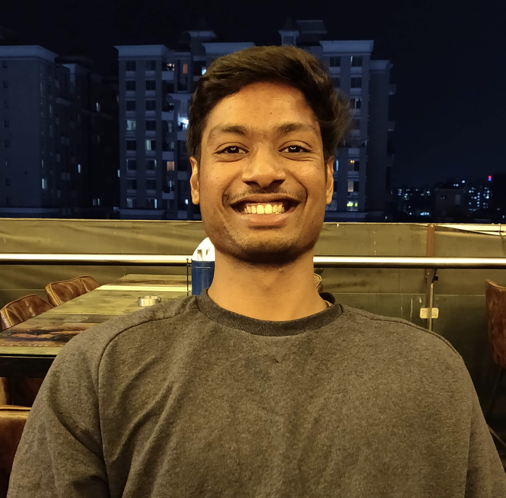

ESG Score Generator
A pipeline that evaluates how statements relate to environmental, social, and governance themes using BERT embeddings, indexed search, and cosine similarity.
View repositoryI build software that connects data to useful decisions.

At CBRE’s Global Digital & Technology team, I turn client requirements into cloud applications and data pipelines. I’m interested in the space where software engineering, AI, and business problems meet.
A few experiments in language, images, and everyday automation.
A pipeline that evaluates how statements relate to environmental, social, and governance themes using BERT embeddings, indexed search, and cosine similarity.
View repositoryImage alignment and enhancement with ORB and ECC in OpenCV, with a masking approach to balance detail and noise.
View repositoryCreate, update, and delete Google Calendar events from an Excel sheet using the Calendar API.
View repositoryAdultCensusData : Built models using sklearn and analyzed data based on the accuracies of Naive Bayes, Decision Tree, Nearest Neighbour, and Logistic Regression algorithms for better understanding.
Cats & Dogs : Implemented a Convolution Neural Network for classification of images after pre-processing using TensorFlow, which gave a mean test accuracy of 91% across multiple Epochs. Also, used Transfer learning to train the images on the InceptionV3 model, which gave an average mean test accuracy of 96% for comparison of the results.
DecisionTreenEnsembles : Implementation of the ID3 algorithm and Ensembles(Bagging and Boosting) without libraries using Mutual Information on Monks and Mushroom dataset along with the implementation of sklearn DecisionTreeClassifier algorithm for result comparison.
ESG Score Generator : Developed a pipeline for computing a statement's correlation with Environment, Social, and Governance using Bert model on embeddings and Faiss search on indexed vectors and further using cosine similarity on ESG Embeddings and Non-ESG Embeddings to calculate the difference to condition if the statement involves ESG factor or not. Used Streamlit to render frontend for input.
Fashion MNIST classification : Implemented DNN model to classify the famous dataset that gave an accuracy of 91.6% on validation.
Human and Horse Image Classification : Trained a CNN model on 500 images of Horses and Humans with a mean accuracy of ~84% on the validation set of around 120 images each.
Next-day Rain Prediction : Analyzed the Australian Rain Prediction dataset consisting of 23 features having many missing data and outliers then preprocessed and selected correlated features to train on traditional ML algorithms to evaluate the performance of algorithms by accuracy, scalability, interpretability, robustness to outliers and measure the improvement by introducing Bagging & Boosting.
Object Tracking using Histogram extraction : Used OpenCV to capture the pixel intensity of any object and used the resulting information to track the object.
Picture Stacking for Image Enhancement : Implemented ORB (Oriented and Rotated Brief) and ECC (Enhanced Correlation Coefficient) algorithms on Images using OpenCV and devised a logical approach to mask dim pixels to further balance quality and noise.
Review Classification using Linear SVM : Used sklearn to extract text features from reviews and trained a model by Pipelining the term frequency-inverse document frequency (tf-idf) Vectorization and training SVM model.
Spam Text Classifier : Basic classification of Email /Texts to Spam or Non-Spam using Pipelining on SVC with accuracy of around 98%.
Browser Call : Basic implementation to open Chrome using Selenium WebDriver on Linux for crawler implementation.
Face Detection on Image : Detects total number of faces present in an image.
Google Calendar automated event creator : Google Calendar functional API calls to add and update (or delete) events from an Excel sheet automatically.
Google Home custom action: Created an activity in the developer console to add and get events to/ from Google Calendar after authorizing the voice of the speaker, activated by keyword.
Overhead ISS notifier : Sends Requests to the International Space Station API to calculate the time left for the satellite to be at the user's current location, extracted using IP address. Additional functionality to get a dictated notification of the time left.
Text to speech : Used Python's gtts library to convert any text to speech.
Amazon Annual Data : Analyzed the Amazon financial dataset from 2006 to 2020 to conclude the growth rate and the most profitable quarter in a year using the Pandas library.
Religion vs Homosexuality : Inferred impactful results in Relation between religion and individual opinions on homosexuality based on surveys conducted in various countries by Pew Research Center using Geoplots and Pandas.
Women in Power : Generated useful plots to compare gender inequality status in the context of political appointments and parliamentary representation in different countries from 1997 to 2019 for the given dataset using Plotly and Pandas.
I work with clients and cross-functional teams to translate requirements into scalable solutions on the Enterprise Data Platform.
Developed scheduling features for the Homecare application and resolved issues in PDF generation, notifications, and billing APIs.
Built Windows applications and automation APIs, automated workflows across SAP and mainframe systems, and worked on text recognition for scanned documents.
M.S. · Computer Software Engineering · January 2021–December 2022
Algorithms, advanced machine learning, big data analytics, and software requirements engineering.
B.Tech. · Computer Science Engineering · 2014–2018
Studied data mining and machine learning. Researched multiclass SVM evaluation for faculty feedback and built a web application to test the model.
Read the published researchPhotography gives me another way to observe the world. I share what catches my eye as a_nomad_capturer.
See my photographyI read books and blogs, explore technical ideas, and sometimes write down observations or summarize what I’ve been reading.
Good work starts
with a conversation.